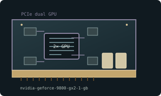

[ DUAL-GPU GRAPHICS CARDS // IDENTIFIED COMPONENT ]
NVIDIA GeForce 9800 GX2 1 GB dual-GPU
Dual G92 / GeForce 9, 2008. This entry identifies one model or reference configuration; related products and OEM variants are distinguished below.

MODEL / VARIANT: Each GPU has separate local memory, not one pooled 1 GB framebuffer. Not 9800 GTX/GTX+; enclosure and bridge interconnect are product-specific.
Recorded specifications
| Cataloged product | NVIDIA GeForce 9800 GX2 1 GB dual-GPU |
|---|---|
| Generation / core | Dual G92 / GeForce 9, 2008 |
| Core & memory | Two G92 GPUs; 1 GB GDDR3 aggregate (512 MB per GPU), each on a 256-bit interface; 600 MHz reference core; 197 W board power class. |
| Host interface & I/O | PCI Express 2.0 x16 dual-board sandwich; dual DVI-I and HDMI; one 6-pin and one 8-pin auxiliary power connector on reference card. |
| Variant boundary | Each GPU has separate local memory, not one pooled 1 GB framebuffer. Not 9800 GTX/GTX+; enclosure and bridge interconnect are product-specific. |
| Archival identification | Record full part number, PCB or module revision, BIOS/firmware, device/subsystem IDs, driver version, adapters, physical condition and source-document edition. |
Compatibility, service & archival notes
Reference card uses two G92 GPUs in a single enclosure; driver profiles control application scaling.
Inspect inter-board bridge/frame, blower, connector seating and fan. Verify both GPUs enumerate; preserve exact VBIOS and compatible multi-GPU driver.
- Check signaling, slot keying, lane width, power pinout, board/module dimensions, case clearance, airflow and PSU requirements for the exact specimen.
- Use drivers supporting its device ID and target OS. Preserve original installer and firmware copies, and record their versions before changes.
- Do not energize boards with corrosion, cracks, damaged connectors, obstructed cooling or suspected shorts; document condition before bench testing.
Manufacturer, model & standards sources
- NVIDIA GeForce 9 legacy drivers/product archiveModel/product-history reference; compare the exact card revision and nameplate.
- NVIDIA product/legacy driver documentationManufacturer or archived product/driver documentation; exact OEM board details may differ.
- PCI Express interface standardHost interface reference; confirm exact physical and electrical compatibility.
- DanielC — NVIDIA GeForce 9800 GX2 BenchmarkIndependent video review; treat as supplementary context, not primary manufacturer documentation.
Reference specifications do not supersede the board vendor's manual or nameplate. Performance figures are vendor claims unless explicitly identified as measured.